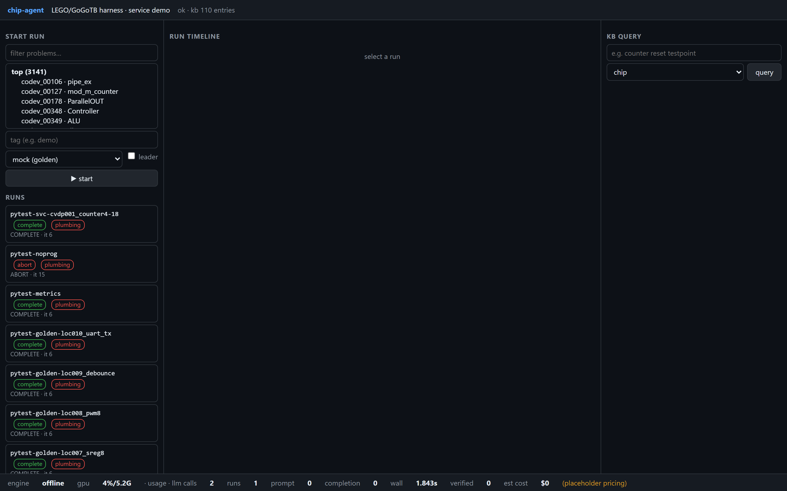

实测结果 · 本地模型
数字芯片设计智能体
输入一段功能规格，系统自己写电路、写测试、跑仿真、修缺陷。结果是否通过由一套它看不到的独立测试来判定，模型不能给自己打分。
- 规格解析把功能描述拆成可验证的测试点清单
- 电路生成产出 RTL，先过编译和静态检查
- 测试生成按测试点清单写测试平台
- 仿真与修复失败时按范围逐级扩大修复，卡住会主动停
- 独立判卷留出测试、变异测试、形式等价三道检查
- 综合真实综合工具给出门级规模

十道模块级设计题的实测记录
全部由本地部署的开源模型完成，没有调用任何云端服务。「变异杀灭率」衡量智能体自己写的测试能发现多少人为注入的缺陷；「形式等价」是用数学方法证明生成的电路和参考设计行为一致。
| 设计题 | 独立判卷 | 功能测试点通过率 | 变异杀灭率 | 形式等价 |
|---|---|---|---|---|
| 4 位计数器 | 通过 | 100% | 100% | 已证明 |
| 序列检测器 | 通过 | 100% | 91.7% | 已证明 |
| 8 位 ALU | 通过 | 100% | 100% | 已证明 |
| 边沿检测 | 通过 | 100% | 100% | 已证明 |
| 同步 FIFO | 通过 | 100% | 100% | 限定深度内未证完 |
| 轮询仲裁器 | 通过 | 100% | 100% | 已证明 |
| 8 位移位寄存器 | 通过 | 100% | 90.0% | 已证明 |
| PWM 发生器 | 通过 | 100% | 93.8% | 已证明 |
| 按键消抖 | 通过 | 100% | 79.2% | 已证明 |
| UART 发送器 | 通过 | 100% | 77.8% | 限定深度内未证完 |
十题全部通过独立判卷，其中八题完成形式等价证明；FIFO 和 UART 的状态空间较大，在限定的证明深度内没有证完，也没有找到反例。这些是模块级题目。更复杂的公开基准题目目前通过率明显更低，仍在攻关。
设计上最在意的三件事
不自证智能体只能看到规格。判卷用的留出测试和参考设计放在它够不到的地方。
结论分级只跑通流程、只过了自测、通过独立判卷，是三个不同的等级，记录里不会混写。
全程可回放每次模型调用的完整输入输出、每个阶段的产物版本都落盘，失败可以追到具体哪一步。
数据来自本机原型的运行记录。现场演示需要本机环境，欢迎联系交流。